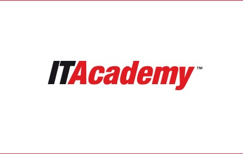
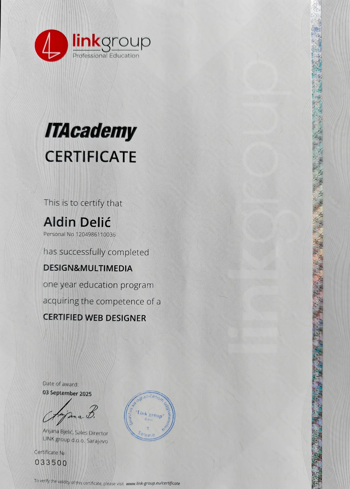

Aldin Delic | Facebeneath
|
Hallo! Mein Name ist Aldin.
Ich bin Ihr Partner für visuelle Identitäten und
performante digitale Lösungen – von hochästhetischen
Websites bis hin zu individuellen Grafikkonzepten.
Als Webdesigner & Front-End-Entwickler mit Sitz in
Hagelstadt bei Regensburg (ursprünglich aus Bihać, Bosnien und
Herzegowina) vereine ich Designvision mit
technischer Präzision.
Meine Spezialität:
Die Entwicklung digitaler Erlebnisse, die benutzerfreundlich
sind und Ihre Marke klar positionieren.
Jedes Projekt wird mit höchster Sorgfalt und einem
ausgeprägten Blick fürs Detail umgesetzt.
Mein Versprechen:
Ich setze Ihre Visionen zuverlässig,
termingerecht und auf
höchstem Niveau um.
| DESIGN.VISION |
ITAcademy Zertifikat

×

FÄHIGKEITEN